In this project, I explored the capabilities of diffusion models, implemented diffusion sampling loops, and used them for tasks such as inpainting and creating optical illusions. The project was structured into several parts, each focusing on different aspects of diffusion models.
The images in Part 0 are 254x254 pixels, while images in other parts are 64x64 pixels. Throughout the project, I used the DeepFloyd IF diffusion model, which you can learn more about here.
Course Logo
I experimented with generating different logo designs for a computer vision course using the diffusion model. Here are two variations:
A minimalist logo for a computer vision class, featuring a stylized camera lens and digital eye.
An elegant academic logo combining a camera aperture with binary code, clean design.
Part 0: Model Sampling
In this section, I sampled images from the model using different numbers of iterations. I also downloaded the precomputed text embeddings to facilitate the generation process.
The following images were obtained during this process:
Figure 1: Sample Image im1.png.
Figure 2: Sample Image download4.png.
Figure 3: Sample Image download2.png.
Figure 4: Sample Image download3.png.
Figure 5: Sample Image download1.png.
Figure 6: Sample Image download.png.
Figure 7: Sample Image 50_steps.png.
Figure 10: Sample Image 50_steps_large.png.
Figure 12: Sample Image 50_steps_2.png.
Figure 9: Sample Image 50_steps_large3.png.
Figure 13: Sample Image 50_steps_1.png.
Figure 11: Sample Image 50_steps_large_2.png.
Part 1: Sampling Loops
In this part, I implemented sampling loops using the pretrained DeepFloyd denoisers to produce high-quality images. I modified these sampling loops to solve different tasks such as inpainting and producing optical illusions.
Sample Image of the Campanile
The sample image used throughout this part is the Berkeley Campanile, which served as the test image for various processes.
Figure 14: Berkeley Campanile.
Part 1.1: Forward Process
A key part of diffusion is the forward process, which takes a clean image and adds noise to it. In this part, I wrote a function to implement this process. The forward process is defined by:
Given a clean image \( x_0 \), we get a noisy image \( x_t \) at timestep \( t \) by sampling from a Gaussian with mean \( \sqrt{\bar\alpha_t} x_0 \) and variance \( (1 - \bar\alpha_t) \). Note that the forward process is not just adding noise—we also scale the image.
Below are the results of the forward process on the test image with \( t \in [250, 500, 750] \):
Figure 14: Berkeley Campanile.
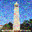
Figure 15: Noisy Campanile at t=250.
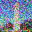
Figure 16: Noisy Campanile at t=500.
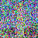
Figure 17: Noisy Campanile at t=750.
Part 1.2: Classical Denoising
I attempted to denoise the noisy images using Gaussian blur filtering. The results were not satisfactory, highlighting the limitations of classical denoising methods in handling significant noise.
Figure 15: Noisy Campanile at t=250.
Figure 16: Noisy Campanile at t=500.
Figure 17: Noisy Campanile at t=750.
Figure 18: Gaussian Denoising at t=250.
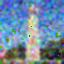
Figure 19: Gaussian Denoising at t=500.
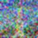
Figure 20: Gaussian Denoising at t=750.
Part 1.3: One-Step Denoising
I used a pretrained diffusion model to denoise the images in a single step. The denoiser predicts the noise in the image, which can then be removed to recover an estimate of the original image.
The process involves estimating the original image from the noisy image using:
Here are the results for \( t \in [250, 500, 750] \):
Figure 24: Noisy Image at t=250.
Figure 25: Noise Estimate at t=500.
Figure 25: Noise Estimate at t=750.
Figure 21: Estimated Clean Image at t=250.
Figure 22: Estimated Clean Image at t=500.
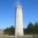
Figure 23: Estimated Clean Image at t=750.
Part 1.4: Iterative Denoising
I implemented iterative denoising, which involves progressively denoising the image by moving from a higher noise level to a lower one. The formula used is:
\( x_{t'} \) is your noisy image at timestep \( t' \) where \( t' < t \) (less noisy).
\( \hat{x}_0 \) is our current estimate of the clean image using equation (2).
\( \alpha_t = \bar\alpha_t / \bar\alpha_{t'} \).
\( \beta_t = 1 - \alpha_t \).
Below are the images at various noise levels during the iterative denoising process:
Figure 26: Noisy Campanile at t=30.
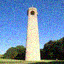
Figure 27: Noisy Campanile at t=90.
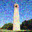
Figure 28: Noisy Campanile at t=240.
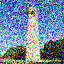
Figure 29: Noisy Campanile at t=390.
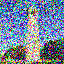
Figure 30: Noisy Campanile at t=540.
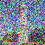
Figure 31: Noisy Campanile at t=690.
Figure 32: Original Image.
Figure 32: Iteratively Denoised Image.
Figure 33: One-Step Denoised Image.
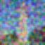
Figure 34: Gaussian Blur Denoised Image.
Part 1.5: Diffusion Model Sampling
I generated images from scratch by starting with random noise and applying iterative denoising. Here are some samples generated with the prompt "a high quality photo":
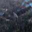
Figure 35: Generated Sample 1.
Figure 36: Generated Sample 2.
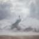
Figure 37: Generated Sample 3.
Figure 38: Generated Sample 4.
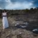
Figure 39: Generated Sample 5.
Part 1.6: Classifier-Free Guidance (CFG)
To improve image quality, I implemented Classifier-Free Guidance (CFG). In CFG, we compute both a noise estimate conditioned on a text prompt (\( \epsilon_c \)) and an unconditional noise estimate (\( \epsilon_u \)). The final noise estimate is:
where \( \gamma \) is the guidance scale (I used \( \gamma = 5 \)). Here are the generated images with CFG:
Figure 40: CFG Sample 1.
Figure 41: CFG Sample 2.
Figure 42: CFG Sample 3.
Figure 43: CFG Sample 4.
Figure 44: CFG Sample 5.
Figure 45: CFG Sample 6.
Figure 46: CFG Sample 7.
Figure 47: CFG Sample 8.
Figure 48: CFG Sample 9.
Figure 49: CFG Sample 10.
Progression of Sample 2 during denoising:
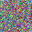
Figure 50: Sample 2 Progression Image 7.
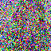
Figure 51: Sample 2 Progression Image 6.
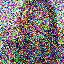
Figure 52: Sample 2 Progression Image 5.
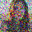
Figure 53: Sample 2 Progression Image 4.
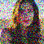
Figure 54: Sample 2 Progression Image 3.
Figure 55: Sample 2 Progression Image 2.
Figure 56: Sample 2 Progression Image 1.
Part 1.7: Image-to-Image Translation
I explored image editing by adding varying amounts of noise to the original image and then denoising it. The more noise added, the larger the edit.
For each of the sub-images, I observed the results and noted the changes.
Sub Part 1.7.1: Editing Hand-Drawn and Web Images
Campanile
Figure 64: Original Campanile.
Figure 70: Campanile at i_start=1.
Figure 69: Campanile at i_start=3.
Figure 68: Campanile at i_start=5.
Figure 67: Campanile at i_start=7.
Figure 66: Campanile at i_start=10.
Figure 65: Campanile at i_start=20.
My Favorite Campanile Reconstructions
Figure 71: Campanile reconstruction at i_start=20.
Figure 72: Campanile reconstruction at i_start=10.
Figure 73: Campanile reconstruction at i_start=7.
Figure 74: Campanile reconstruction at i_start=5.
Figure 75: Campanile reconstruction at i_start=3.
Hand-Drawn Airplane
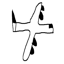
Figure 57: Original Airplane.
Figure 58: Airplane at i_start=1.
Figure 59: Airplane at i_start=3.
Figure 60: Airplane at i_start=5.
Figure 61: Airplane at i_start=7.
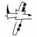
Figure 62: Airplane at i_start=10.
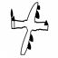
Figure 63: Airplane at i_start=20.
Hand-Drawn House
Figure 64: Original House.
Figure 66: House at i_start=1.
Figure 67: House at i_start=3.
Figure 68: House at i_start=5.
Figure 69: House at i_start=7.
Figure 70: House at i_start=10.
Figure 65: House at i_start=20.
Web Image - Avocado
Figure 71: Original Avocado.
Figure 72: Avocado at i_start=1.
Figure 73: Avocado at i_start=3.
Figure 74: Avocado at i_start=5.
Figure 75: Avocado at i_start=7.
Figure 76: Avocado at i_start=10.
Figure 77: Avocado at i_start=20.
Web Image - Surfer
Figure 78: Original Surfer image.
Figure 79: Surfer at i_start=1.
Figure 80: Surfer at i_start=3.
Figure 81: Surfer at i_start=5.
Figure 82: Surfer at i_start=7.
Figure 83: Surfer at i_start=10.
Figure 84: Surfer at i_start=20.
Web Image - Tree
Figure 85: Treeimage original.
Figure 86: Tree at i_start=15.
Figure 87: Tree at i_start=10.
Figure 88: Tree at i_start=7.
Figure 89: Tree at i_start=5.
Figure 90: Tree at i_start=3.
Figure 91: Tree at i_start=1.
Part 1.7.2: Inpainting
I implemented inpainting by using a mask to specify regions to edit. By applying the diffusion process only within the masked area, new content is generated while the rest of the image remains unchanged.
Campanile Mask Process Version 1
Figure 92: Original Campanile.
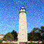
Figure 93: Campanile Inpainting Step t3.
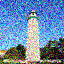
Figure 94: Campanile Inpainting Step t4.
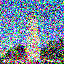
Figure 95: Campanile Inpainting Step t6.
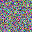
Figure 96: Campanile Inpainting Step t9.
Campanile Mask Process Version 2
Figure 97: Original Campanile.
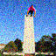
Figure 98: Campanile Inpainting Step t3.
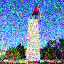
Figure 99: Campanile Inpainting Step t4.
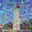
Figure 100: Campanile Inpainting Step t6.
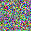
Figure 101: Campanile Inpainting Step t9.
Color Painting Process
Figure 102: Original Image.
Figure 103: Mask.
Figure 104: Area to Fill.
Figure 109: Final Color Painting Result.
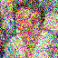
Figure 108: Color Painting Step 4.
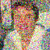
Figure 105: Color Painting Step 1.
Figure 107: Color Painting Step 3.
Figure 106: Color Painting Step 2.
Figure 109: Final Color Painting Result.
Goggles Inpainting Process - Larger Mask
Figure 110: Original Image.
Figure 111: Mask.
Figure 112: Area to Fill.
Figure 113: Final Result.
Figure 114: Inpainting Step 1.
Figure 115: Inpainting Step 2.
Figure 116: Inpainting Step 3.
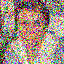
Figure 117: Inpainting Step 4.
Goggles Inpainting Process - Smaller Mask
Figure 118: Original Image.
Figure 119: Mask.
Figure 120: Area to Fill.
Figure 121: Final Result.
Figure 122: Inpainting Step 1.
Figure 123: Inpainting Step 2.
Figure 124: Inpainting Step 3.
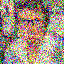
Figure 125: Inpainting Step 4.
Roger Federer - Eyes Mask
Figure 126: Original Image.
Figure 127: Mask.
Figure 128: Area to Fill.
Figure 129: Final Result.
Roger Federer - Full Face Mask
Figure 130: Original Image.
Figure 131: Mask.
Figure 132: Area to Fill.
Figure 133: Final Result.
Roger Federer - Small Tennis Ball Mask
Figure 134: Original Image.
Figure 135: Mask.
Figure 136: Area to Fill.
Figure 137: Final Result.
Roger Federer - Large Tennis Ball Mask
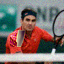
Figure 138: Original Image.
Figure 139: Mask.
Figure 140: Area to Fill.
Figure 141: Final Result.
Roger Federer - Full Body Mask Progression
Figure 142: Original Image.
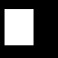
Figure 143: Mask.
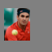
Figure 144: Area to Fill.
Figure 145: Inpainting Step 1.
Figure 146: Inpainting Step 4.
Figure 147: Inpainting Step 7.
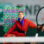
Figure 148: Inpainting Step 10.
Figure 149: Final Result.
Part 1.7.3: Text-Conditional Image-to-image Translation
Same thing as the previous section, but guide the projection with a text prompt.
***for all of the images set, the right most corresponds to the most blurry one
Campanile with Rocket Prompt
Figure 152: Campanile with rocket prompt - Original image.
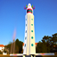
Figure 153: Campanile with rocket prompt - Stage 7.
Figure 154: Campanile with rocket prompt - Stage 6.
Figure 155: Campanile with rocket prompt - Stage 5.
Figure 156: Campanile with rocket prompt - Stage 4.
Figure 157: Campanile with rocket prompt - Stage 3.
Figure 158: Campanile with rocket prompt - Stage 2.
Francesco with Amalfi Coast Prompt
Figure 159: Francesco with Amalfi Coast prompt - Stage 1.
Figure 160: Francesco with Amalfi Coast prompt - Stage 2.
Figure 161: Francesco with Amalfi Coast prompt - Stage 3.
Figure 162: Francesco with Amalfi Coast prompt - Stage 4.
Figure 163: Francesco with Amalfi Coast prompt - Stage 5.
Figure 164: Francesco with Amalfi Coast prompt - Stage 6.
Francesco with Rocket Prompt
Figure 165: Francesco with rocket prompt - Stage 1.
Figure 166: Francesco with rocket prompt - Stage 2.
Figure 167: Francesco with rocket prompt - Stage 3.
Figure 168: Francesco with rocket prompt - Stage 4.
Figure 169: Francesco with rocket prompt - Stage 5.
Figure 170: Francesco with rocket prompt - Stage 6.
Figure 171: Francesco with rocket prompt - Stage 7.
Roger Federer with Amalfi Coast Prompt
Figure 172: Roger Federer with Amalfi Coast prompt - Stage 1.
Figure 173: Roger Federer with Amalfi Coast prompt - Stage 2.
Figure 174: Roger Federer with Amalfi Coast prompt - Stage 3.
Figure 175: Roger Federer with Amalfi Coast prompt - Stage 4.
Figure 176: Roger Federer with Amalfi Coast prompt - Stage 5.
Figure 177: Roger Federer with Amalfi Coast prompt - Stage 6.
Roger Federer with Rocket Prompt
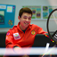
Figure 178: Roger Federer with rocket prompt - Stage 1.
Figure 179: Roger Federer with rocket prompt - Stage 2.
Figure 180: Roger Federer with rocket prompt - Stage 3.
Figure 181: Roger Federer with rocket prompt - Stage 4.
Figure 182: Roger Federer with rocket prompt - Stage 5.
Figure 183: Roger Federer with rocket prompt - Stage 6.
Part 1.8: Visual Anagrams
I created images that appear differently when flipped upside down, known as visual anagrams. The algorithm used is:
where \( f_{\text{lowpass}} \) is a Gaussian blur and \( f_{\text{highpass}} \) is a high-pass filter. Here is a hybrid image of a skull and a waterfall:
Figure 152: Hybrid Image of Skull and Waterfall
Figure 153: Hybrid Image of Skull and Waterfall
Figure 154: Hybrid Image of Skull and Amalfi Coast
Hybrid Image: Man and Campfire Scene
Figure 155: Hybrid Image combining a photo of a man and an oil painting of people around a campfire.
Hybrid Image: Pencil Drawing and Amalfi Coast
Figure 156: Hybrid Image combining a pencil drawing and the Amalfi Coast.
Part 2: Bells & Whistles
I explored model bias by generating images with the prompt "successful human being". After generating 100 samples, I observed that around 69% of the images depicted males and 31% depicted females. Additionally, 88% of the people were wearing black suits. This analysis highlights potential biases in the model's training data.
Here are some sample images:
Figure 155: Sample 0.
Figure 156: Sample 1.
Figure 157: Sample 2.
Figure 158: Sample 3.
Figure 159: Sample 4.
Figure 160: Sample 5.
Figure 161: Sample 6.
Figure 162: Sample 7.
Figure 163: Sample 8.
Figure 164: Sample 9.
Conclusion
This project provided hands-on experience with diffusion models and their applications in image generation and manipulation. By implementing various techniques and experimenting with different parameters, I gained a deeper understanding of the capabilities and limitations of diffusion models in computer vision tasks.
Part B: Diffusion Models from Scratch!
In this part of the project, I trained my own diffusion model on the MNIST dataset. The goal was to understand the fundamental principles behind diffusion models by implementing them from scratch. This involved building a UNet architecture, formulating the diffusion process mathematically, and iteratively denoising images to generate new samples.
Part 1: Training a Single-Step Denoising UNet
1.1 Problem Formulation
The objective was to train a denoising neural network \( D_{\theta} \) that can map a noisy image \( z \) back to its clean version \( x \). This is formulated as minimizing the following L2 loss function:
\[
L = \mathbb{E}_{z, x} \left\| D_{\theta}(z) - x \right\|^2
\]
To generate the noisy image \( z \), Gaussian noise is added to the clean image \( x \) using a predefined noise level \( \sigma \):
\[
z = x + \sigma \epsilon, \quad \epsilon \sim \mathcal{N}(0, I)
\]
1.2 Implementing the UNet
I implemented a UNet architecture to serve as the denoiser \( D_{\theta} \). The UNet consists of downsampling and upsampling layers with skip connections, allowing it to capture both global and local features.
Key components of the UNet architecture include:
ConvBlock: Two convolutional layers followed by Batch Normalization and GELU activation.
DownBlock: A ConvBlock followed by a downsampling operation.
UpBlock: An upsampling operation followed by a ConvBlock.
The architecture is designed to take an input image of size \( 28 \times 28 \) and process it through multiple layers to reconstruct the denoised image.
1.3 Visualizing the Noising Process
Before training the model, I visualized the effect of adding Gaussian noise with different \( \sigma \) values to the MNIST images. The noise levels ranged from 0.0 (no noise) to 1.0 (completely noisy).
The denoiser was trained on the MNIST training set with a fixed noise level \( \sigma = 0.5 \). The training parameters were as follows:
Optimizer: Adam optimizer with a learning rate of \( 1 \times 10^{-4} \).
Batch Size: 256.
Epochs: 5.
The training loss decreased steadily over the epochs, indicating that the model was learning to denoise the images effectively.
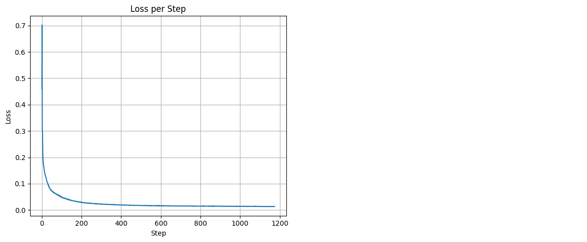
Figure 2: Training loss curve over 5 epochs.
1.5 Results After Training
I evaluated the denoiser on the test set after the 1st and 5th epochs. The denoised images improved significantly after training.
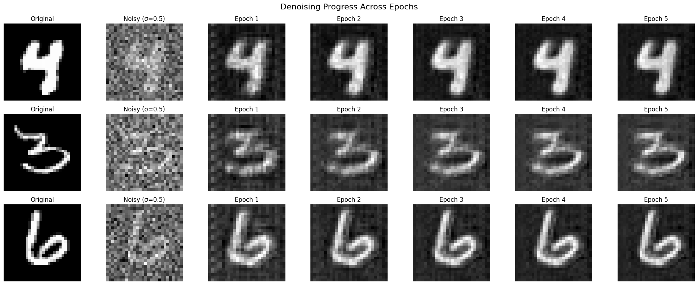
Figure 3: Denoised images after the 1st and 5th epochs.
1.6 Out-of-Distribution Testing
To assess the denoiser's robustness, I tested it on images with different noise levels \( \sigma \) that it wasn't trained on. The denoiser performed well for \( \sigma \) close to 0.5 but struggled with higher noise levels.
In this part, I implemented a Denoising Diffusion Probabilistic Model (DDPM) to perform iterative denoising. Unlike the single-step denoiser, DDPM predicts the noise component \( \epsilon \) added to the image at each timestep \( t \).
The training objective is to minimize the following loss function:
To accommodate the DDPM framework, I modified the UNet to accept timestep \( t \) and class label \( c \) as additional inputs. These were embedded using fully connected layers and integrated into the network via conditioning mechanisms. The modifications included:
Embedding \( t \) and \( c \) using fully connected layers.
Applying these embeddings after the unflattening and first upsampling layers.
Implementing a mask vector to optionally drop the class conditioning for classifier-free guidance.
The forward process involves adding Gaussian noise to the image at each timestep \( t \) using a predefined variance schedule \( \{\beta_t\} \). The noisy image \( x_t \) is sampled as:
Where \( \sigma_t \) is derived from the variance schedule. I implemented this sampling procedure to generate new images from pure noise.
2.11 Training the DDPM
The DDPM was trained using the same dataset and optimizer settings as before, but for a longer duration of 20 epochs to ensure convergence. The training loss decreased over time, indicating successful learning.
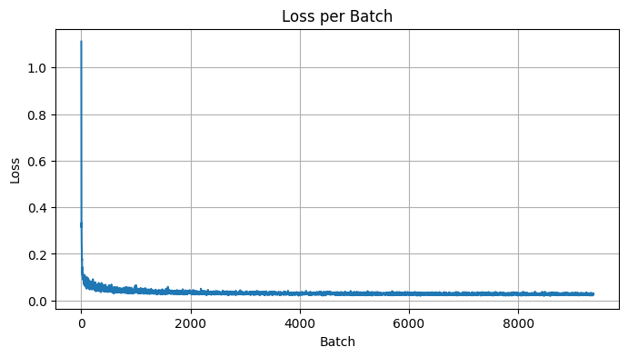
Figure 5: Training loss curve over all batches.
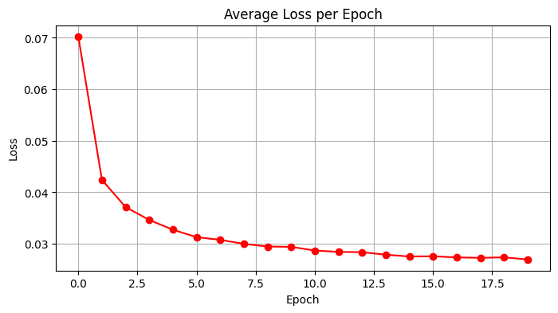
Figure 5: Training loss curve over 20 epochs.
To evaluate the model's performance, I generated reconstructions at different epochs to visualize the learning progress.
Figure 7: Reconstructions after across epochs.
Figure 6: Reconstructions after 1 epoch.
Figure 9: Reconstructions after 10 epochs.
Figure 8: Reconstructions after 20 epochs showing improved image quality
2.2 Classifier-Free Guidance (CFG)
Training with Class Conditioning
The DDPM was trained using the same dataset and optimizer settings as before, but for a longer duration of 20 epochs to ensure convergence. The training loss decreased over time, indicating successful learning.
Figure 5: Training loss curve over 20 epochs.
To improve sample quality, I implemented Classifier-Free Guidance. This involves generating two noise estimates: one conditioned on the class label (\( \epsilon_c \)) and one unconditioned (\( \epsilon_u \)). The final noise estimate is computed as:
Where \( \gamma \) is the guidance scale. I experimented with different guidance scales to observe their effect on the generated images.
2.2.2 Results After Training
I generated samples after the 1st, 5th, 10th, 15th, and 20th epochs with a guidance scale of 5. The quality of the generated images improved significantly over the epochs.
Figure 6: Generated samples after 1 epoch.
Figure 7: Generated samples after 5 epochs.
Figure 9: Generated samples after 15 epochs.
Figure 8: Generated samples after 10 epochs.
Figure 10: Generated samples after 20 epochs.
Now we meaasure the quality of the generated images with different guidance scales.
Increasing the guidance scale (\( \gamma \)) strengthens the influence of the class conditioning, making the generated samples more closely match the characteristics of their target class labels. This works by interpolating between an unconditional and conditional diffusion model prediction, with higher \( \gamma \) values giving more weight to the conditional prediction. However, setting \( \gamma \) too high (e.g., 10) led to artifacts and overly-exaggerated class features, as the model overemphasizes class-specific attributes at the expense of natural image statistics.
Training a diffusion model from scratch provided deep insights into how these models function at a fundamental level. Implementing the forward and reverse processes, adjusting the UNet architecture, and experimenting with classifier-free guidance highlighted the importance of each component in generating high-quality samples. The project demonstrated the power of diffusion models in generating images and their potential for further research and applications.